Introduction into model audit
Alicja Gosiewska
2018-02-18
library(auditor)library(car)
library(randomForest)
model.lm <- lm(prestige~education + women + income, data = Prestige)
utils::data(anorexia, package = "MASS")
model.glm <- glm(Postwt ~ Prewt + Treat + offset(Prewt),
family = gaussian, data = anorexia)
model.rf <- randomForest::randomForest(Postwt ~ Prewt + Treat, data = anorexia)plotScaleLocation(au.lm, "education")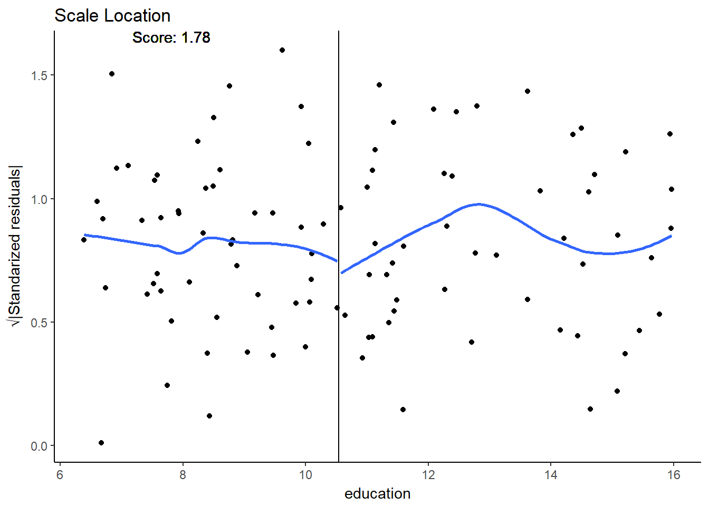
plotScaleLocation(au.glm, "Prewt")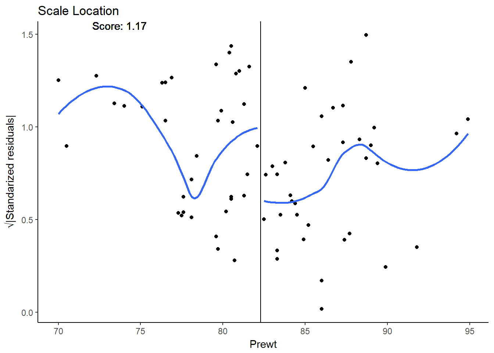
plotScaleLocation(au.rf)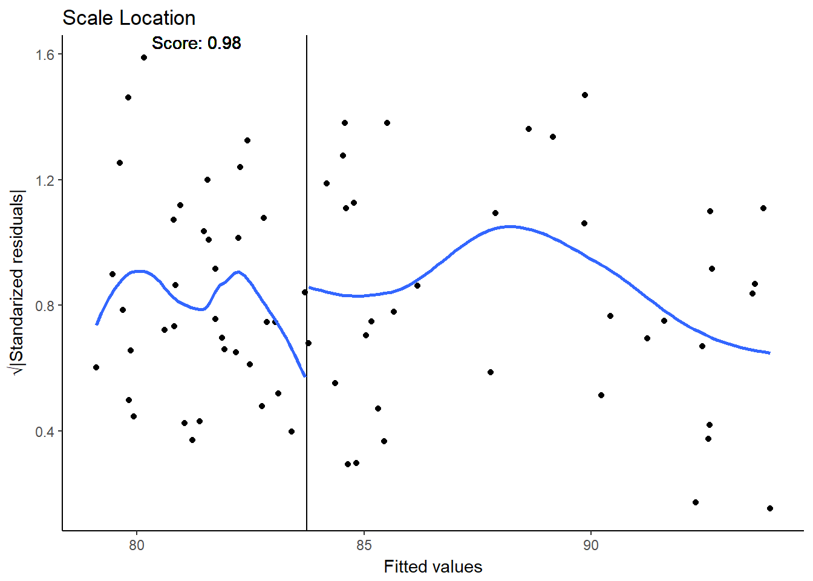
plotAutocorrelation(au.lm, "education")
plotAutocorrelation(au.glm, "Prewt")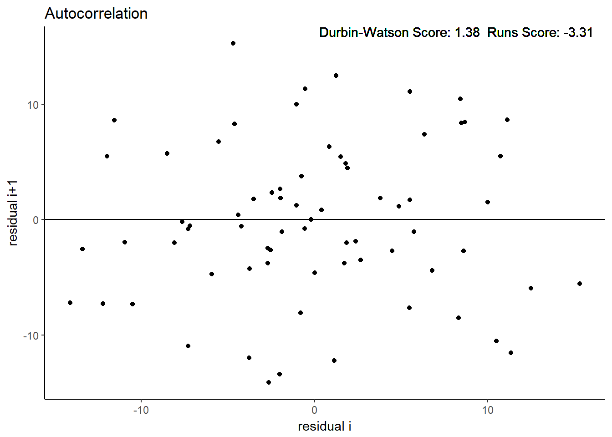
plotAutocorrelation(au.rf)
plotACF(au.lm, "education")
plotACF(au.glm, "Prewt")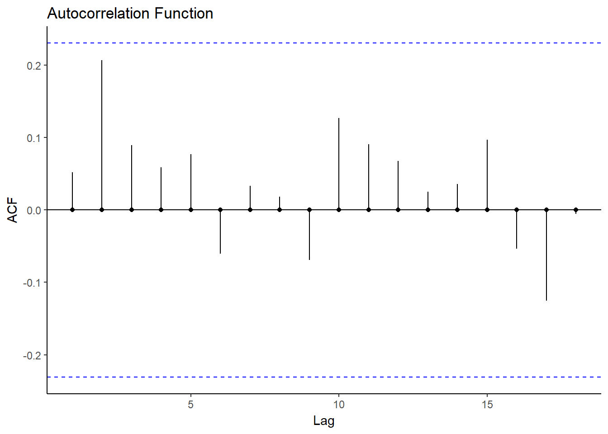
plotACF(au.rf)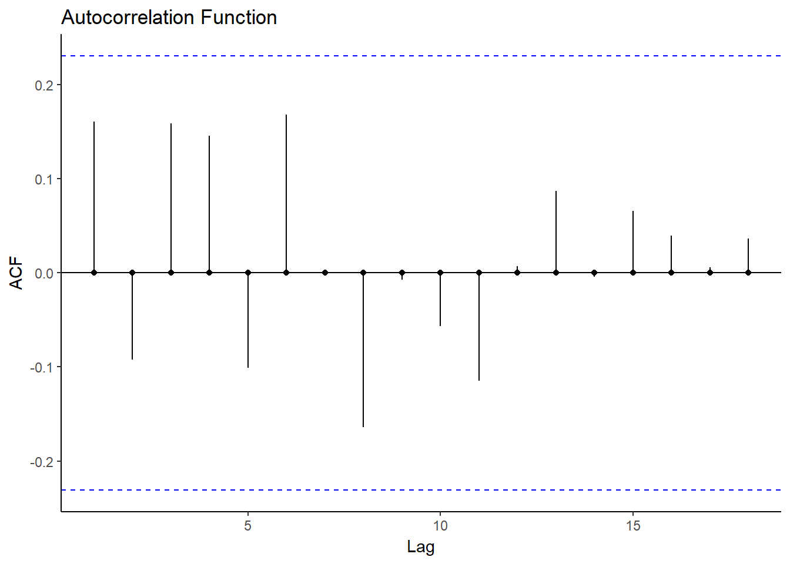
plotResiduals(au.lm, "education")
plotResiduals(au.glm, "Prewt")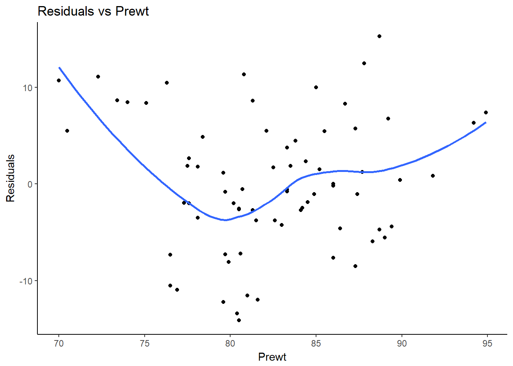
plotResiduals(au.rf)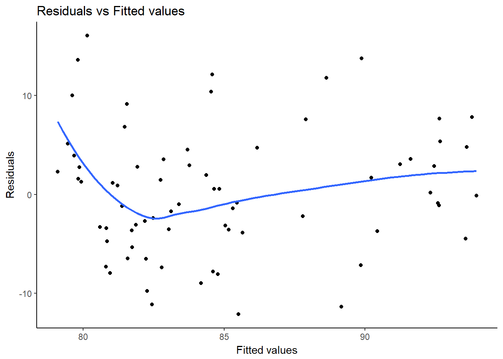
plotCook(au.lm)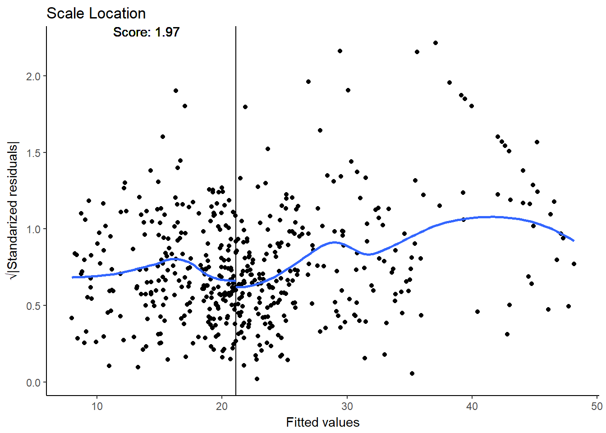
plotCook(au.glm)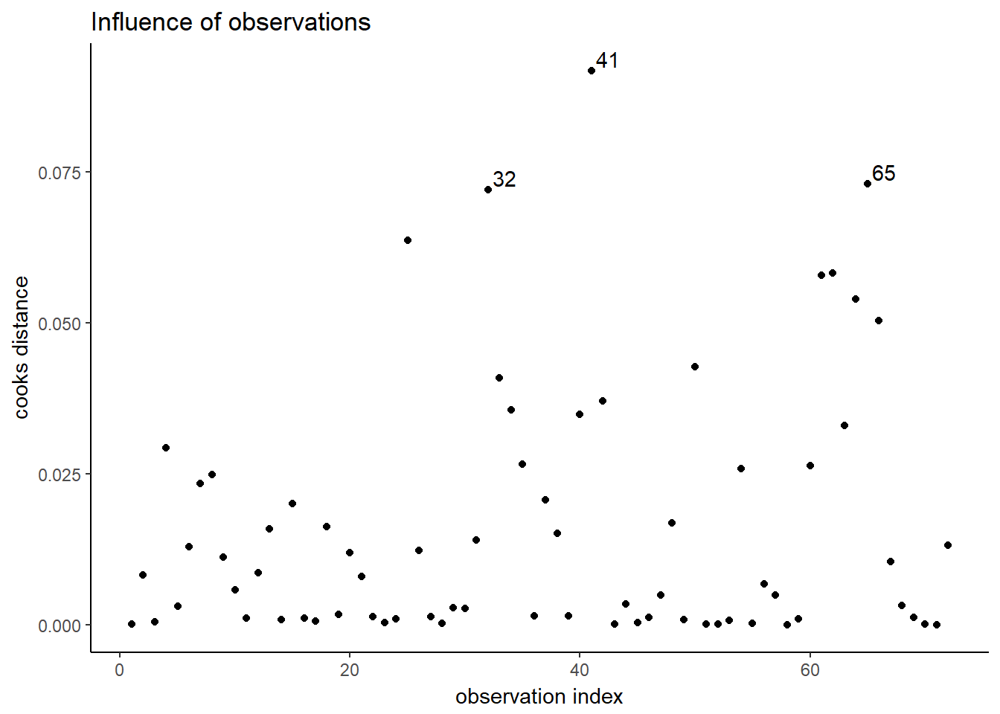
plotCook(au.rf)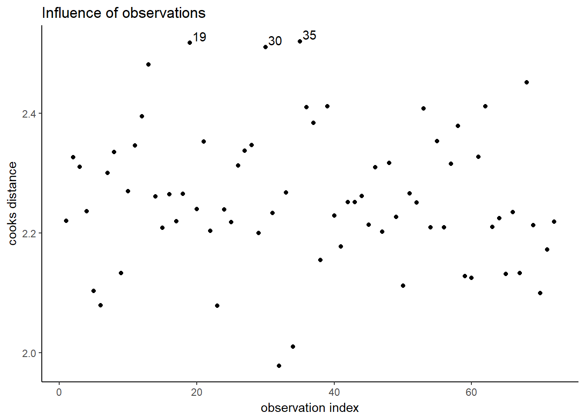
plotHalfNormal(au.lm)
plotHalfNormal(au.glm)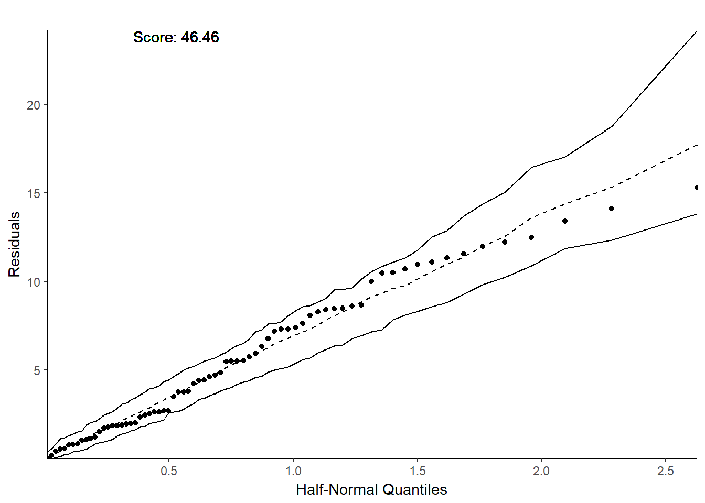